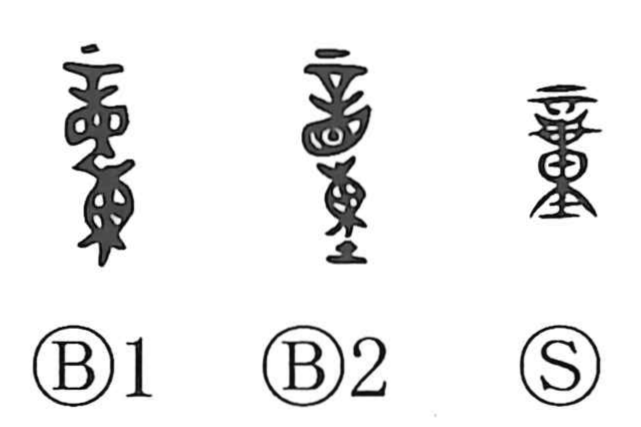

Explanation
The bronze form of 童 has 東 below as its sound element. 東 originally pictures a tied sack; later forms sometimes use 重, and the modern lower 里 is an abbreviated remnant. Above it, the old graph combines 辛, a large needle, with 目, an eye. It shows punitive tattooing above the eye.
童 first names a person subjected to this punishment and reduced to servile status. Such people were not permitted to bind their hair in an adult topknot. Their unbound hair provided the connection with children, whose hair was likewise not yet dressed in that way. The meaning broadened to a young child, while 僮 retained the servant sense more explicitly.
The older association with labour also survives in 童謡: these were originally songs sung by servants or labourers, before the compound came to mean children’s songs.